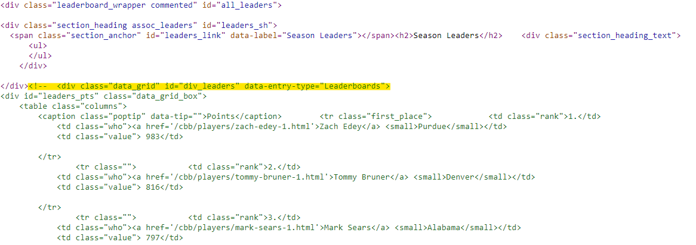

Leaderboards: SportsRef
rvest to scrape AP and Coaches polls from Sports Reference
Introduction
Sports Reference includes a bevy of program, conference, and national leader data, but scraping it isn’t entirely straightforward because the information is “hidden” behind expandable sections. Even so, we can use rvest to programmatically extract this data.
Sports Reference limits users to 20 requests per minute, so to avoid an HTTP 429 error (“too many requests”), all functions must use a sleep of three or more seconds – Sys.sleep(3) – when iterating over 20 times.
Structure
There are two structures to take note of here: program leaders and national/conference leaders.
Program Leaders
Scraping program leaderboards is fairly analogous to many other portions of the site: html_table works, but you need a little bit of cleaning.
html_table will return every populated leaderboard (over 40), so we can use html_text and target the appropriate node to return the “names” of each statistical category. rlang::set_names can then take that vector and name our tables (the elements returned by html_table).
If we use map2, we can pass the name of each table to our cleaning function and set the third column, associated with the “value” of the record, to that name using rename_with.
There are three “types” of leaderboards offered: season, career, and game (usually complete to 2006-07). For the last one, there are two commas inside the player string, so we cannot use a comma delimiter to split player name and year/span/etc. So, we need to insert a different character (|) after the first comma and then split on that.
scrape_program_leaders <- function(team, leaderboard_type) {
slug <- filter(cbd_teams(), common_team == team) %>%
pull(sr_link) %>%
str_extract("(?<=schools/).+(?=/men)") # extract slug
url <- paste0('https://www.sports-reference.com/cbb/schools/', slug, '/men/leaders-and-records-', leaderboard_type, '.html')
html <- read_html(url)
# store names of tables
table_names <- html %>% html_nodes('#div_leaders .poptip') %>% html_text()
# get the tables and set their names
tables <- html %>% html_table() %>% set_names(table_names)
# set the delimiter based on leaderboard type
delim <- if(leaderboard_type == 'game') '|' else ','
## clean the tables
map2(tables, names(tables),
.f = function(table, name) {
table %>%
# rename cols.
rename_with(~c('rank', 'player', name)) %>%
clean_names() %>%
# fix tied ranks
fill(rank, .direction = 'down') %>%
rowwise() %>%
mutate(player = ifelse(leaderboard_type == 'game',
gsub("^([^,]+),\\s*(.*)$", "\\1|\\2", player),
player)) %>%
ungroup() %>%
# separate name and years played
separate_wider_delim(player, delim = delim, names = c('player', 'time')) %>%
# add team name
mutate(team = team, time = trimws(time))
}
)
}API Key set!| rank | player | time | points | team |
|---|---|---|---|---|
| 1 | J.J. Redick | 2005-06 | 964 | Duke |
| 2 | R.J. Barrett | 2018-19 | 860 | Duke |
| 3 | Jay Williams | 2000-01 | 841 | Duke |
| 4 | Dick Groat | 1950-51 | 831 | Duke |
| 5 | Johnny Dawkins | 1985-86 | 809 | Duke |
| 6 | Danny Ferry | 1988-89 | 791 | Duke |
| 7 | Dick Groat | 1951-52 | 780 | Duke |
| 8 | Grayson Allen | 2015-16 | 779 | Duke |
| 9 | Shane Battier | 2000-01 | 778 | Duke |
| 10 | Christian Laettner | 1990-91 | 771 | Duke |
National Leaders
On the other hand, national leaderboards are a bit more complex. If you run a simple html_table function on the leaderboard page, you’ll be met with an empty list.
read_html('https://www.sports-reference.com/cbb/seasons/men/2024-leaders.html') %>% html_table()Typically, this means one of two things: a) the page loads dynamically or b) there are no tables on the page…but neither are true! In fact, the data is there and it is wrapped in a traditional table. The data, however, is commented out until a user expands the table (image below), and html_table does not inherently access commented-out tables. So, what can we do?

Well, we need to access the parent ID of the tables, which in this case is all_leaders (and you can see that in the top right of the screenshot).
Once we do html_nodes(#all_leaders), we need a way to access those commented-out tables, and we can do that using an xpath selector – comment().
read_html('https://www.sports-reference.com/cbb/conferences/acc/men/2024-leaders.html') %>%
html_nodes('#all_leaders') %>%
html_nodes(xpath = "comment()")If you run that code, you’ll be returned an XML nodeset element. Using that object, we can convert it to pure text with html_text, giving us the raw html string, and read it back into a usable format with read_html. Finally, we can toss in html_table to get the list of tables we expected at the start.
read_html('https://www.sports-reference.com/cbb/conferences/acc/men/2024-leaders.html') %>%
html_nodes('#all_leaders') %>%
html_nodes(xpath = "comment()") %>%
html_text() %>%
read_html()When cleaning, however, there is a small catch: Player and team names have no common delimiter like above. The easiest way to approach this, in my opinion, is to build the table manually by targeting the IDs of each column. The function below does this and sprinkles in the cleaning and naming described in the program section.
scrape_national_leaders <- function(year) {
url <- paste0('https://www.sports-reference.com/cbb/seasons/men/', year, '-leaders.html')
html <- read_html(url) %>%
html_nodes('#all_leaders') %>%
html_nodes(xpath = "comment()") %>%
html_text() %>%
read_html()
# store names of tables
table_names <- html %>% html_nodes('#div_leaders .poptip') %>% html_text()
# get the tables and set their names
tables <- html %>% html_nodes('table')
## clean the tables
all_tables <- map2(tables, table_names,
.f = function(table, name) {
data <- tibble(
rank = table %>% html_nodes('.rank') %>% html_text(),
player = table %>% html_nodes('a') %>% html_text(),
team = table %>% html_nodes('small') %>% html_text(),
value = table %>% html_nodes('.value') %>% html_text()
)
data <- data %>%
mutate(rank = parse_number(rank),
value = as.numeric(value)) %>%
fill(rank, .direction = 'down') %>%
rename_with(~c('rank', 'player', 'team', name)) %>%
clean_names()
return(data)
}
)
all_tables <- all_tables %>% set_names(table_names)
return(all_tables)
}scrape_national_leaders(2024)$Points| rank | player | team | points |
|---|---|---|---|
| 1 | Zach Edey | Purdue | 983 |
| 2 | Tommy Bruner | Denver | 816 |
| 3 | Mark Sears | Alabama | 797 |
| 4 | RJ Davis | UNC | 784 |
| 5 | Dalton Knecht | Tennessee | 780 |
| 6 | Jaedon Ledee | San Diego State | 772 |
| 7 | Jalen Blackmon | Stetson | 744 |
| 8 | Tyler Thomas | Hofstra | 742 |
| 9 | Terrence Shannon | Illinois | 736 |
| 10 | Tucker DeVries | Drake | 734 |
Conference Leaders
Conference leaderboards behave similarly to national ones, and I’ll leave that as an exercise for the reader (at least for now).